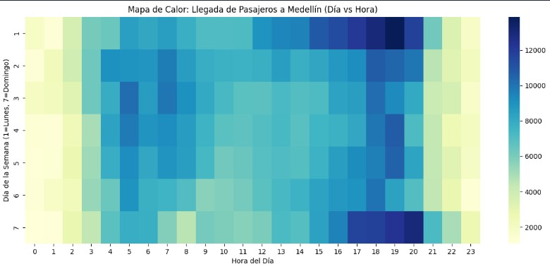
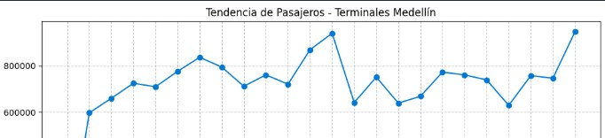
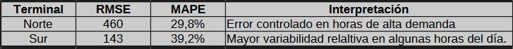
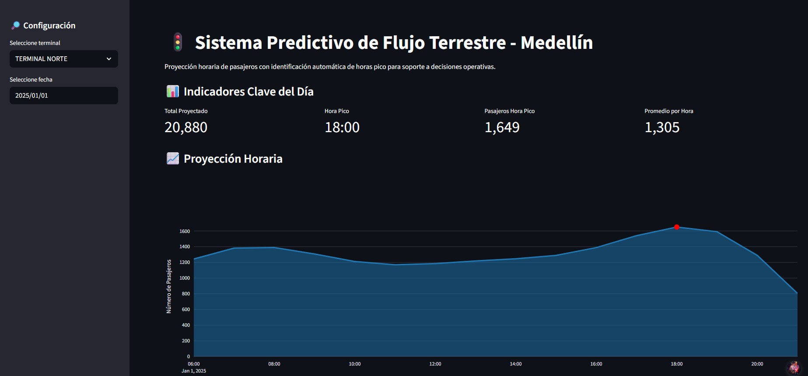

Sistema de Predicción de Terminales - Medellín
Resumen
Desarrollo de un sistema de predicción que estima la cantidad de pasajeros que llegan diariamente a las terminales de transporte, permitiendo optimizar la capacidad operativa y mejorar la experiencia de los usuarios. La solución se basa en modelos de series de tiempo utilizando Prophet.

Problema
La ocupación diaria en una terminal de transporte varía diariamente. La gestión eficiente requiere predicciones confiables para tomar decisiones operativas, como cantidad de personal disponible, gestión de bahías de llegada de buses, sugerencia ded estrategias comerciales como valor agregado al arrendamiento de locales, entre otros.
- Error crítico: Predicción muy alejada de la realidad, genera desabastecimiento o congestión.
- Error tolerable: Predicción cercana, impacto operativo bajo.
Enfoque
El modelo utiliza Prophet para series de tiempo de cada terminal. Se alimentó con la data de llegadas de pasajeros de dos años, para predecir la llegada de pasajeros del año siguiente. Incorpora eventos especiales como días festivos. Se utilizaron las métricas de evaluación MAE (Error Absoluto Medio), MAPE (Error Porcentual Absoluto Medio) y covertura de intervalos de confianza.
Se comenzó con un modelo ETL, con la ingesta de la data directamente de API pública. A través de Polars y Pandas se realizó un primer tratamiento dejando esta data en estado bronce y se almacena en contenedor de Azure Data Lake Gen2, en archivos Parquet (asegurando tipos de datos) particionados por lotes (10.000 filas por lote) y por año. Luego se exploró la data por medio de técnicas de minería de datos y finalmente se pasó al entrenamiento y optimización del modelo.
- ETL a través de consumo de API y almacenamiento en Azure.
- Minería, análisis de datos y entrenamiento del modelo.
- Series temporales de ocupación por terminal.
- Feature engineering: eventos especiales, días festivos, tendencias.
- Evaluación con métricas MAE, MAPE y cobertura de intervalos de confianza.


Resultados
Métricas:

Terminal del Norte:
El modelo captura adecuadamente los patrones diarios y horas pico. El error absoluto es consistente con el volumne de pasajeros y permite estrategia de anticipación.
Terminal del Sur:
Se observa mayor variabilidad relativa en ciertas franjas horarias (especialmente en primeras horas del día), lo que impacta en métricas porcentuales. No obstante, el modelo conserva capacidad para identificar tendencias y apoyar decisiones operativas.
Finalmente, se prioriza la franja horaria del modelo entre las 6:00 - 21:00. Ya que es el periodo donde se concentra la mayor criticidad operativa y donde cuenta con mayor estabilidad y utilidad para la toma de decisiones.
Demo Interactiva
La aplicación permite, a través de un selector de fecha y de terminal, generar proyecciones horarias por terminal con identificación automática de hora pico y KPIs. Desplegada en Streamlit Cloud con modelo previamente entrenado en producción.

La arquitectura y metodología de la presente demo fueron diseñadas originalmente para un entorno con datos confidenciales. Para efectos de portafolio, se desarrolló una versión equivalente con datos abiertos, preservando la lógica, métodos, el enfoque analítico y la optimización utilizada en producción.
Stack Tecnológico
 Python
Python Pandas
Pandas JavaScriptPythonPandasJavaScript
JavaScriptPythonPandasJavaScript